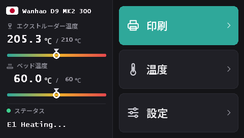

Duplicator 9 のタッチスクリーンを書き換える
MK1 から MK3 まで、すべての D9 は同じ DWIN T5 タッチスクリーン（480 × 272）を搭載しています。このファームウェアでは、microSD カードから書き込む、私たちの 16 言語対応の新しい UI「DGUS Reloaded 2.0」で動作します。
DWIN_SET.zip をダウンロード（DGUS Reloaded 2.0）
DGUS Reloaded 2.0 の特長
- 16 言語：English, Français, Deutsch, Español, Italiano, Português, Nederlands, Polski, Türkçe, Русский, العربية, हिन्दी, 中文, 日本語, 한국어, Bahasa Indonesia。ホーム画面でプリンター名の横にある国旗をタップすると切り替わり、選んだ言語はプリンターが記憶します。
- フィラメントセンサーのページ：設定 → フィラメント → フィラメントセンサー。フィラメントセンサーをご覧ください。
- 消えないステータス行：最後のメッセージ（たとえば Ready）が、30 秒後に消えずに画面に残ります。
- ノズルとベッドの温度ゲージ（目標温度の目印付き）。
- 全ページが新しいデザインに：ダークテーマ、大きなボタン、ポップアップのアイコン。

DGUS Reloaded 2.0 には、メインボードに v2.0.9 以降が必要です。v2.0.8 以前では、起動のたびに言語が英語に戻り、フィラメントセンサーのページも動作しません。先にメインボードを書き換えてください。
1. microSD カードをフォーマットする
FAT32、アロケーションユニットサイズ 4096 バイトでフォーマットします。ほかのサイズでは画面がカードを無視します。
- Windows：Windows 11 では FAT32 でフォーマットできないことが多いので、GUIFormat を使い、アロケーションユニットサイズを 4096 に設定します。
- Linux：
sudo mkfs.fat -F 32 -s 8 /dev/sdX1（先にlsblkでデバイスを確認してください）。 - macOS：
sudo newfs_msdos -F 32 -c 8 /dev/diskN（diskutil listで確認してください）。
2. ファイルをコピーする
DWIN_SET.zip を展開し、DWIN_SET フォルダーをまるごとカードのルートにコピーします。
3. 書き込む
- プリンターの電源を切り、電源コードを抜きます。
- ベースの前面を開けて、画面の裏側に手が届くようにします。microSD スロットはそこにあります。
- カードを挿して電源を入れます。10～30 秒で画面に更新が表示されます。正常に再起動するまで待ちます（全体で 1～3 分）。
- 電源を切り、カードを抜いて、ベースを閉じます。
Wanhao のD9 画面アップデート動画で、スロットの位置がわかります。
このプロジェクトの由来
DGUS Reloaded 2.0 は DGUS Reloaded 1.0.3 （Desuuuu 作、のちに Neo2003 が引き継ぎ）をページごとに描き直したものです。ソースコード、画面用ファイルを生成するプログラム、翻訳は GitHub にあります。お使いの言語で間違った言葉や不自然な言葉を見つけましたか？Discord で教えていただくか、GitHub で issue を作成してください。
DGUS Reloaded 1.0.3 に戻すには（たとえば v2.0.9 より古いファームウェアを使う場合）、DWIN_SET_1.0.3.zip を同じ方法で書き込みます。
Wanhao の画面に戻す
Wanhao の画面用ファームウェアは、Wanhao のメインボード用ファームウェアでしか動作しません。MK1：MK1 のページにある、対応するバージョンの画面用ファイル。MK1 + キット、MK2、MK3：DWIN_SET_MK2.zip。手順は同じです。